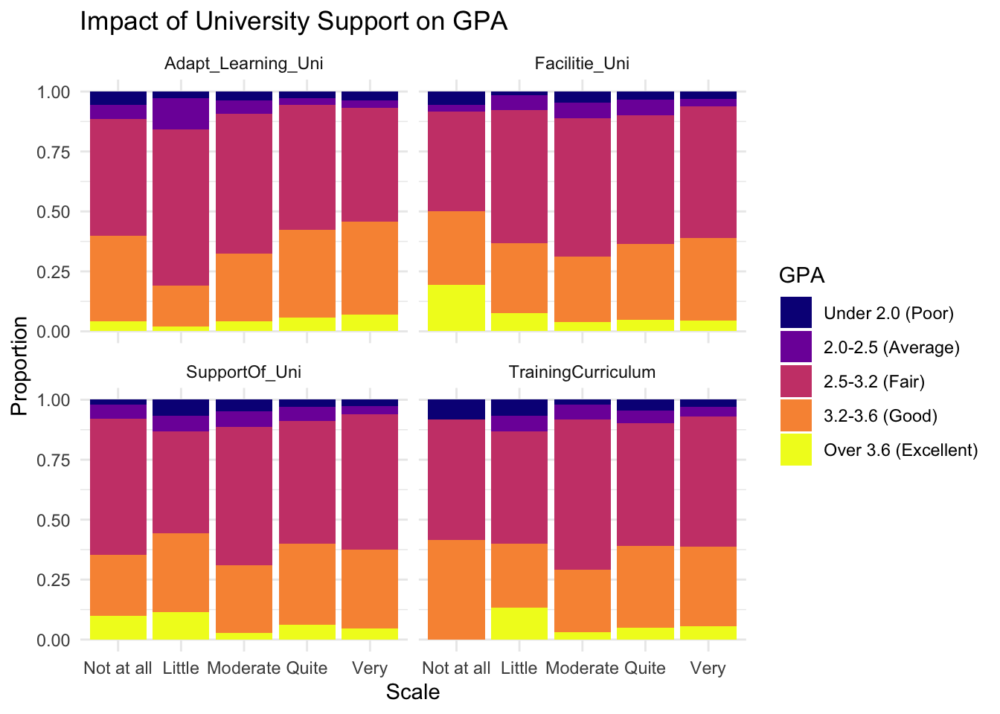
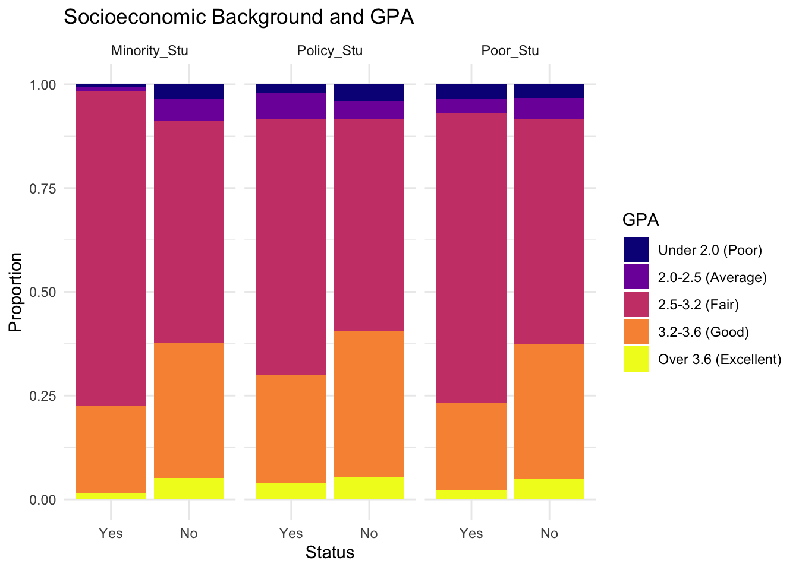
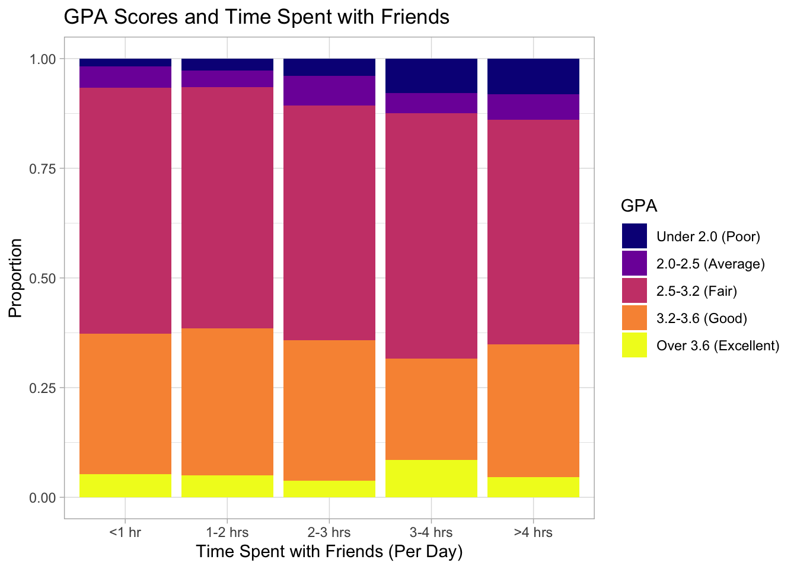

pacman::p_load(tidyverse, readxl, patchwork)Visualising Factors Affecting GPA: Student Survey Analysis from Vietnam National University, Hanoi
Take-Home Exercise 1
1 Introduction
Academic performance among university students remains a critical concern for institutions seeking to optimize learning outcomes. At Vietnam National University (VNU) Hanoi, understanding factors influencing GPA carries direct implications for curriculum design, student support services, and resource allocation.
This analysis examines factors influencing academic performance (measured by GPA) among 2,170 students and alumni from the University of Education, Vietnam National University, Hanoi, using a data set collected via online surveys from March to June 2023. The study highlights demographic traits, behavioral habits like study time and social media use, and institutional/peer support as key drivers of learning outcomes, with most students reporting over 8 hours of daily study and moderate social media engagement.
2 Installing and Loading Required Libraries
Getting the right tools ready is key before any data dive. Here, R with tidyverse and ggplot2 handled everything from loading the dataset to crafting those clean stacked bar visuals.
Essential libraries loaded include:
tidyverse: A collection of R packages designed for data science. It includes core packages like dplyr, tidyr, readr, and ggplot2.
readxl: This package is specifically designed to import tabular data from Excel files (.xls and .xlsx) into R. While it is part of the broader tidyverse ecosystem, it is not loaded automatically and must be called separately.
patchwork: This package is used for plot composition, which helps to combine separate ggplot2 objects into a single graphic.
The code chunk below is used for loading the required packages:
3 Importing and Preparing the Data
To analyse and visualize the factors that affect the learning outcomes of university students, The VNU Hanoi student survey data set found in the Mendeley repository was used, which can be found here.
The data was imported as an Excel file using read_xlsx() from readxl, containing variables like demographics (gender, year, parental background), behavioral factors (study time, social media use, time with friends), and institutional support metrics.
To verify that the complete data set was loaded, dim(df) was used to find its dimension, which confirmed that there are 2,170 rows and 22 columns. No missing values were detected (sum(is.na(df)) == 0), confirming complete responses. All variables arrived as numeric doubles representing ordinal categories per the codebook provided.
# Importing the dataset
df <- read_xlsx("data/VNU Students Data.xlsx")
#Viewing the data
dim(df)[1] 2170 22show(df[1:10,1:5])# A tibble: 10 × 5
Year Gender Policy_Stu Minority_Stu Poor_Stu
<dbl> <dbl> <dbl> <dbl> <dbl>
1 5 2 2 2 2
2 5 1 2 2 2
3 5 2 2 2 2
4 5 2 2 2 2
5 5 1 1 2 2
6 5 2 2 2 2
7 5 2 2 2 2
8 5 2 2 2 2
9 5 2 2 2 2
10 5 2 2 2 2# Check for missing values
sum(is.na(df))[1] 0Data preprocessing involved converting numeric codes to labeled factors using dplyr::mutate(). This ensures ggplot2 produces readable axes and enables position = "fill" for proportional stacked bars.
Binary demographics (Yes/No): converted 1 to “Male”/“Yes” and 2 to “Female”/“No”. Applied to Gender, Policy_Stu, Minority_Stu, and Poor_Stu.
Multi-level ordinals (5-6 categories): Applied to Year, Father_Edu, Mother_Edu, Father_Occupation, and Mother_Occupation, Time_SocicalMedia, Time_Studying, Time_Friends, and GPA.
Likert scales (1-5): converted 1-5 to (“Not at all”, “Little”, “Moderate”, “Quite”, “Very”) respectively. Applied to Adapt_Learning_Uni, Study_Methods, SupportOf_Uni, SupportOf_Lec, Facilitie_Uni, Quality_Lecturer, TrainingCurriculum, Competitive_Class, and InfuenceF_Friends.
To verify that all the values have been converted, show(df[1:10,1:5]) is used to return the first 10 rows and first 5 columns of the data, which confirms
Show the code
df <- df %>%
mutate(Gender = factor(Gender, levels = c(1, 2), labels = c("Male", "Female")),
Policy_Stu = factor(Policy_Stu, levels = c(1,2), labels = c("Yes", "No")),
Minority_Stu = factor(Minority_Stu, levels = c(1,2), labels = c("Yes","No")),
Poor_Stu = factor(Poor_Stu, levels = c(1,2), labels = c("Yes","No")))
df <- df %>%
mutate(Year = factor(Year, levels = 1:5,
labels = c("First-year", "Second-year", "Third-year", "Fourth-year", "Graduated")),
Father_Edu = factor(Father_Edu, levels = 1:6,
labels = c("Primary school", "Secondary school", "High School", "College", "University/graduate education", "Others")),
Mother_Edu = factor(Mother_Edu, levels = 1:6,
labels = c("Primary school", "Secondary school", "High School", "College", "University/graduate education", "Others")),
Father_Occupation = factor(Father_Occupation, levels = 1:5,
labels = c("Government employee", "Self-employment", "Freelance", "Other", "Not public")),
Mother_Occupation = factor(Mother_Occupation, levels = 1:5,
labels = c("Government employee", "Self-employment", "Freelance", "Other", "Not public"))
)
df <- df %>%
mutate(Time_SocialMedia = factor(Time_SocicalMedia, levels = 1:5,
labels = c("<1 hr", "1-2 hrs", "2-3 hrs", "3-4 hrs", ">4 hrs")),
Time_Studying = factor(Time_Studying, levels = 1:5,
labels = c("<2 hrs", "2-4 hrs", "4-6 hrs", "6-8 hrs", ">8 hrs")),
Time_Friends = factor(Time_Friends, levels = 1:5,
labels = c("<1 hr", "1-2 hrs", "2-3 hrs", "3-4 hrs", ">4 hrs")),
GPA = factor(GPA, levels = 1:5,
labels = c("Under 2.0 (Poor)", "2.0-2.5 (Average)", "2.5-3.2 (Fair)",
"3.2-3.6 (Good)", "Over 3.6 (Excellent)"))
)
df <- df %>%
mutate(across(c(Adapt_Learning_Uni, Study_Methods, SupportOf_Uni, SupportOf_Lec,
Facilitie_Uni, Quality_Lecturer, TrainingCurriculum,
Competitive_Class, InfuenceF_Friends),
~ factor(.x, levels = 1:5,
labels = c("Not at all", "Little", "Moderate", "Quite", "Very"))))
show(df[1:10,1:5])# A tibble: 10 × 5
Year Gender Policy_Stu Minority_Stu Poor_Stu
<fct> <fct> <fct> <fct> <fct>
1 Graduated Female No No No
2 Graduated Male No No No
3 Graduated Female No No No
4 Graduated Female No No No
5 Graduated Male Yes No No
6 Graduated Female No No No
7 Graduated Female No No No
8 Graduated Female No No No
9 Graduated Female No No No
10 Graduated Female No No No 4 Demographic Profile of Students
Who are these students? A peek at gender and year breakdowns gives us the lay of the land before linking demographics to performance patterns.
Show the code
p1 <- ggplot(df, aes(x = Gender, fill = Gender)) +
geom_bar() +
labs(title = "Distribution of Student Gender",
x = "Gender", y = "Number of Students") +
scale_fill_manual(values = c("#1F4E79", "#C95E9E")) +
theme_light() +
theme(legend.position = "none")
p2 <- ggplot(df, aes(x = Year, fill = Year)) +
geom_bar() +
labs(title = "Distribution of Year of Study",
x = "Year", y = "Number of Students") +
scale_fill_manual(values = c("#440154", "#21908C", "#FDBB2E")) +
theme_light() +
theme(legend.position = "none")
p1|p2
The Gender Distribution plot shows that there is a gender imbalance in the data set, with more female respondents than male, which could lead to bias in the analysis.
Year of Study shows that a sizable amount of the respondents of the survey are students who have already graduated from the university, while there is no representation of the first and second year students.
5 Overview of Academic Performance
How do GPAs shake out overall? The bar chart below shows where most VNU students land, setting up why certain factors might push them higher.
Show the code
ggplot(df, aes(x = GPA, fill = GPA)) +
geom_bar() +
scale_fill_viridis_d(option = "plasma") +
labs(title = "Distribution of Student Academic Performance",
x = "GPA Category", y = "Number of Students") +
theme_light() +
theme(legend.position = "none")
It is observed a large chunk of the students fall in the Fair and Good categories, with GPA scores ranging from 2.5 to 3.6.
6 Relationship Between Study Habits and GPA
Does more study time pay off? We expect longer hours to link with better grades, and the plot below shows how average study time per day affects GPA.
Show the code
ggplot(df, aes(x = Time_Studying, fill = GPA)) +
geom_bar(position = "fill") +
scale_fill_viridis_d(option = "plasma") +
labs(title = "Academic Performance by Daily Study Time",
x = "Daily Study Time", y = "Proportion", fill = "GPA") +
theme_light()
The stacked bar chart shows that while more study time generally correlates with better academic performance, there is a peak point of efficiency.
Key Findings:
Students studying 4–6 hours daily achieve the highest proportion of “Excellent” GPAs (over 3.6). This range represents the most effective balance for top-tier results.
Studying more than 8 hours does not lead to better outcomes. In fact, “Excellent” scores decrease in this bracket, suggesting that excessive study may lead to burnout or reduced focus.
Studying fewer than 4 hours is strongly linked to “Average” and “Poor” GPAs, indicating a minimum threshold is necessary for stability.
The “Fair” GPA category (2.5–3.2) remains the most common outcome across all study levels.
Maximum academic success is most frequently reached at 4–6 hours of study; both insufficient and excessive effort yield lower proportions of top grades.
7 Impact of Social Media Engagement on GPA
Social media is everywhere, but does scrolling hurt grades? The plot below tests how the average amount of time spent on social media per day affects the GPA.
Show the code
ggplot(df, aes(x = Time_SocialMedia, fill = GPA)) +
geom_bar(position = "fill") +
scale_fill_viridis_d(option = "plasma") +
labs(title = "Impact of Social Media on GPA Scores",
x = "Social Media Usage (Per Day)", y = "Proportion", fill = "GPA") +
theme_light()
The stacked bar chart illustrates a negative correlation between daily social media usage and academic performance (GPA).
Key Findings:
Students spending more than 4 hours per day on social media have the lowest proportion of “Good” (3.2–3.6) GPAs compared to all other groups. The “Excellent” (Over 3.6) category also remains consistently small across all usage levels.
As social media usage exceeds 4 hours, there is a visible increase in the proportion of students with “Poor” (Under 2.0) and “Average” (2.0–2.5) GPAs, represented by the dark blue and purple segments.
Across most time increments, the “Fair” (2.5–3.2) GPA category remains the largest demographic, though it narrows slightly as social media time increases.
While moderate use (1–4 hours) shows relatively stable GPA distributions, heavy usage (4+ hours) is clearly associated with a higher likelihood of lower grades and a decrease in top-tier academic results.
9 Peer Influence and Collaborative Learning
Peers shape motivation, from competition to group hangs. Here, the learning outcome are measured by the level of class competition and whether the level of other students affect the individual.
Show the code
peer_vars <- c("Competitive_Class", "InfuenceF_Friends")
df_peer <- df %>% select(all_of(peer_vars), GPA) %>%
pivot_longer(cols = peer_vars, names_to = "Peer_Support", values_to = "Scale")
ggplot(df_peer, aes(x = Scale, fill = GPA)) +
geom_bar(position = "fill") +
scale_fill_viridis_d(option = "plasma") +
labs(title = "Impact of Class Competition and Peer Influence on GPA", x = "Scale", y = "Proportion", fill = "GPA") +
facet_wrap(~ Peer_Support) +
theme_minimal()
Class Competition:
As class competitiveness increases from “Not at all” to “Very,” there is a noticeable growth in the proportion of higher GPAs.
The “Excellent” (Over 3.6) category is virtually non-existent in non-competitive classes but becomes a visible segment in classes with “Moderate” to “Very” high competition.
The “Good” (3.2–3.6) and “Fair” (2.5–3.2) brackets remain relatively stable, though “Poor” (Under 2.0) GPAs appear more frequent in classes with only “Little” competition.
Peer Influence
The impact of friends shows a more complex trend regarding academic success.
Those reporting “Not at all” for friend influence show a high proportion of “Good” GPAs but almost no “Excellent” scores.
Students with “Very” high peer influence maintain a large combined proportion of “Good” and “Excellent” GPAs, suggesting that strong peer connections may support higher academic achievement
10 Institutional Support and Academic Performance
Universities offer support like facilities and training. Do students who rate them highly perform better? The patterns across categories tell the tale. In this case, institutional support includes level of adaptation, responsiveness of the university facilities, and curriculum training.
Show the code
uni_vars <- c("Adapt_Learning_Uni", "SupportOf_Uni", "Facilitie_Uni", "TrainingCurriculum")
df_uni <- df %>% select(all_of(uni_vars), GPA) %>%
pivot_longer(cols = uni_vars, names_to = "Uni_Support", values_to = "Scale")
ggplot(df_uni, aes(x = Scale, fill = GPA)) +
geom_bar(position = "fill") +
scale_fill_viridis_d(option = "plasma") +
labs(title = "Impact of University Support on GPA", x = "Scale", y = "Proportion", fill = "GPA") +
facet_wrap(~ Uni_Support) +
theme_minimal()
Key Findings:
For “Adapt_Learning_Uni” and “SupportOf_Uni,” higher levels of support (moving toward “Very”) generally correspond with a larger proportion of students achieving “Good” (3.2–3.6) GPAs.
Across all categories, students with “Fair” (2.5–3.2) GPAs consistently represent the largest proportion, regardless of the level of support provided.
Students with “Excellent” (>3.6) GPAs are most visible at moderate to high support levels in learning adaptation and curriculum, but surprisingly, they also appear significantly in the “Not at all” or “Little” categories for facilities and curriculum.
he proportion of students with “Poor” (<2.0) or “Average” (2.0–2.5) GPAs remains relatively small and stable across all support scales.
In summary, while increased support appears to bolster the “Good” GPA bracket, it does not guarantee a higher proportion of “Excellent” scores, which seem influenced by other factors..
11 Academic Guidance and Learning Resources
Good lecturers and study methods can make or break learning. Let’s see if students feeling strong guidance climb higher on the GPA scale, by measuring the quality of lecturers, the support they provide, and the students’ study methods.
Show the code
ac_vars <- c("Study_Methods", "SupportOf_Lec", "Quality_Lecturer")
df_ac <- df %>% select(all_of(ac_vars), GPA) %>%
pivot_longer(cols = ac_vars, names_to = "Ac_Support", values_to = "Scale")
ggplot(df_ac, aes(x = Scale, fill = GPA)) +
geom_bar(position = "fill") +
scale_fill_viridis_d(option = "plasma") +
labs(title = "Impact of Academic Support from Lecturers on GPA", x = "Scale", y = "Proportion", fill = "GPA") +
facet_wrap(~ Ac_Support) +
theme_minimal()
The stacked plot suggests a positive correlation between higher perceived support and better academic performance.
Key Findings:
Across all categories, as the scale of support moves from “Not at all” to “Very,” the proportion of students in the “Good” (3.2–3.6) and “Fair” (2.5–3.2) GPA ranges generally expands.
In the “Quality_Lecturer” and “SupportOf_Lec” sections, students reporting “Not at all” or “Little” support show significantly higher proportions of “Average” (2.0–2.5) and “Poor” (Under 2.0) GPAs compared to those who feel highly supported.
While “Excellent” (Over 3.6) GPAs are present across all support levels, they appear most consistently when students report at least “Moderate” support in study methods and lecturer quality.
Overall, while academic support isn’t the sole determinant of success, students who feel highly supported by their lecturers and study methods are less likely to have poor GPAs and more likely to maintain grades above 3.2.
12 Influence of Student Background on GPA
Background factors like policy status, household income, and minority status often influence outcomes. Do minority or supported students show different GPA stacks?
Show the code
bg_vars <- c("Policy_Stu", "Minority_Stu", "Poor_Stu")
df_bg <- df %>% select(all_of(bg_vars), GPA) %>%
pivot_longer(cols = bg_vars, names_to = "Background", values_to = "Status")
ggplot(df_bg, aes(x = Status, fill = GPA)) +
geom_bar(position = "fill") +
scale_fill_viridis_d(option = "plasma") +
labs(title = "Socioeconomic Background and GPA", x = "Status", y = "Proportion", fill = "GPA") +
facet_wrap(~ Background) +
theme_minimal()
Key Findings:
Across all three categories, students identified as “Yes” (minority, policy-supported, or poor) generally show a lower proportion of “Good” (orange) and “Excellent” (yellow) GPA scores compared to their “No” counterparts.
The largest segment for all student groups is the “Fair” (2.5–3.2) GPA range, represented by the deep pink bars. However, this proportion is noticeably higher for those in the “Yes” status groups, indicating a concentration in the middle-to-lower performance tiers.
The “No” status groups consistently exhibit larger yellow segments, suggesting that students from more advantaged backgrounds are more likely to achieve an “Excellent” GPA (over 3.6).
While the proportions of “Poor” and “Average” GPAs (dark purple/blue) are relatively small overall, they appear slightly more prominent in the “Yes” status columns.
Overall, the data suggests that socioeconomic challenges correlate with a lower probability of achieving top-tier academic results, with disadvantaged students more likely to cluster in the “Fair” GPA range.
13 Conclusion
This analysis indicates that academic performance is influenced by a combination of study habits, social interaction, and environmental factors, though several data biases must be considered.
Optimal Study-Life Balance: The data suggests a “sweet spot” for academic success, with peak performance reached at 4–6 hours of study. Conversely, heavy usage of other activities (4+ hours) and excessive socialization (3+ hours) are linked to a higher frequency of lower GPAs.
The Role of Competition: A competitive classroom environment appears to be a significant driver of high achievement. The “Excellent” GPA category only becomes a visible segment as class competitiveness increases from “Moderate” to “Very” high.
Socialization Trends: While moderate socialization does not drastically shift overall GPA distributions, those who spend 3–4 hours with friends surprisingly show a slightly higher proportion of “Excellent” grades compared to other groups, despite also seeing an increase in “Poor” grades.
Data Limitations and Bias: It is critical to note that these findings may be skewed by a gender imbalance (more female respondents) and a lack of representation from first- and second-year students. Furthermore, a large portion of the respondents have already graduated, which may affect the current relevance of the trends.
14 References
Kam, T.S. (2023). A Layered Grammar of Graphics: ggplot2 methods
Kam, T.S. (2023). Beyond ggplot2 Fundamentals
Ngoc Le, Diep (2024), “Dataset about VNU students”, Mendeley Data, V1, doi: 10.17632/23ppcdbmhc.1
Tran, V. D., Nguyen, K. S. T., & Le, D. N. (2025). Dataset of factors affecting learning outcomes of students at the University of Education, Vietnam National University, Hanoi. Data in Brief, 59, 111438.
8 Social Interaction and Academic Outcomes
What about hanging out with friends? Balanced time might be the sweet spot for VNU students. This section explores how GPA varies based on the average amount of time spent with friends per day.
Show the code

The plot shows that there is no clear, linear correlation between socializing and academic performance. Across all time periods, the vast majority of students fall within the “Fair” (2.5-3.2 GPA) category, represented by the large pink sections.
Key Findings:
The proportion of “Excellent” students (over 3.6 GPA) remains consistently low (under 10%) across all groups, though it appears slightly higher for those spending 3-4 hours with friends compared to other groups.
Students spending more than 3 hours with friends show a slightly larger proportion of “Poor” (under 2.0) and “Average” (2.0-2.5) GPAs compared to those who socialize less.
Overall, the plot suggests that moderate to high levels of socialization do not drastically shift the overall distribution of GPA scores for most students.